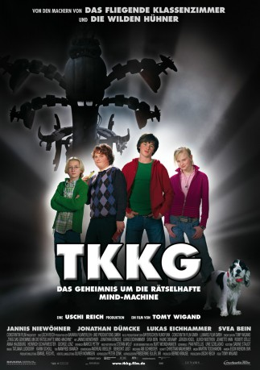

#10035 TKKG und die rätselhafte Mind-Machine
 gesehen am 26.11.2018
gesehen am 26.11.2018
 
 IMDB-Wertung: 4.4 / 10
IMDB-Wertung: 4.4 / 10  Metascore: 0
Metascore: 0 
Der Internatsschüler Kevin ist ein cleverer Tüftler und gewinnt sogar den Jugend-forscht-Preis. Was seine Lehrer und Mitschüler allerdings nicht wissen: In seinem Keller experimentiert das Superhirn heimlich mit einer neuen Erfindung – der Mind-Machine, ein Apparat mit schrecklichen Nebenwirkungen! TKKG kommen schnell dahinter, dass die kürzlich von vermummten Motorradfahrern entführten Schüler Claudia und Martin von Kevin als Versuchspersonen festgehalten werden und versuchen, die beiden zu retten. Doch plötzlich verschwindet die Mind-Machine aus Kevins Haus. Wer steckt dahinter?
Jahr: 2006
Dauer: 111 Minuten
FSK: 6
Land: Deutschland Studio: Constantin FilmTonspuren: DD2.0 - ,
Untertitel:
Auflösung: 1080p (1920x824) Größe: 5365 MB
Genre: Action, Sci-Fi, Abenteuer, Krimi, Familie
Regisseur: Tomy Wigand
Drehbuch: Marco Petry, Rolf Kalmuczak, Burt Weinshanker
Soundtrack: Martin Todsharow
Darsteller:
 Jannis Niewöhner als Peter 'Tim' Carsten
Jannis Niewöhner als Peter 'Tim' Carsten Jürgen Vogel als Kommissar Emil Glockner
Jürgen Vogel als Kommissar Emil Glockner Ulrich Noethen als Herr Manek
Ulrich Noethen als Herr Manek Jeanette Hain als Eleonora
Jeanette Hain als Eleonora Robert Dölle als Weltmann
Robert Dölle als Weltmann Helmfried von Lüttichau als Hackspecht
Helmfried von Lüttichau als Hackspecht George Lenz als Bienert
George Lenz als Bienert Heinrich Schafmeister als Georg
Heinrich Schafmeister als Georg Michael A. Grimm als Wachmann 1
Michael A. Grimm als Wachmann 1- Jonathan Dümcke als Karl Vierstein
- Lukas Eichammer als Willi 'Klößchen' Sauerlich
- Svea Bein als Gabriele 'Gaby' Glockner
- Hauke Diekamp als Kevin Sudheim
- Anna Hausburg als Nadine
- Anna Schudt als Marlies Glockner
- Ruby Kossin als Claudia
- Nicolas Christl als Martin
- Johann Hillmann als Benjamin 'Benni' Küsters
- Anne-Marie Bubke als Frau Steiner
- Alfred Kleinheinz als Professor Vierstein
- Philip Köstring als Barkeeper Weltmann
- Bastian Volkmers als Wachmann 2
- Rafael Mayer als Obdachloser
- Pascal Thiel als Kevin Sudheim - 9 Jahre
- Philipp Peters-Arnolds als Stefan Stefflings
Datei: X:\Kinder Collections\TKKG\TKKG und die rätselhafte Mind-Machine (2006, FSK6, 1920x824).mkv seit 21.11.2018
Festplatte: Kinder-Filme+Trick
 Alle Filme aus Gruppe 'Kinder Collections\TKKG'
Alle Filme aus Gruppe 'Kinder Collections\TKKG'
- TKKG
- TKKG und die rätselhafte Mind-Machine (der aktuelle Film)